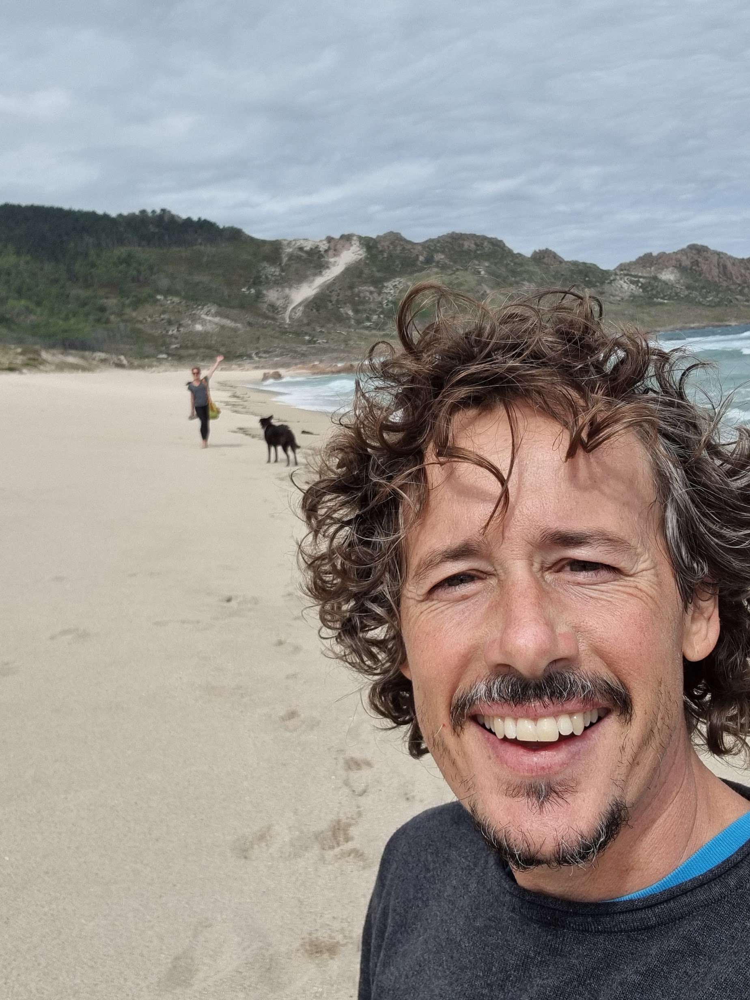

Hola, Soy Fran Espina
Creo productos y resuelvo problemas
Desarrollador senior backend, consultor tecnológico, y experto en .NET.
Experiencia multisectorial en nóminas, recursos humanos, contabilidad, comercio electrónico, etc. Desarrollo integral de aplicaciones móviles multiplataforma... y además hago mis páginas web.
Más de 20 años buscando soluciones.
